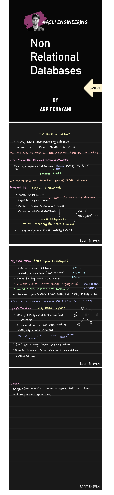

1. Introduction¶
A Non-Relational Database (NoSQL) is a database that does not use the traditional relational table-based structure (rows and columns with fixed schema). NoSQL databases are designed for: - Large-scale data storage - Distributed systems - High availability - Flexible schema - Horizontal scalability NoSQL databases typically follow BASE consistency rather than strict ACID transactions.
2. Characteristics of NoSQL Databases¶
- Schema-less or flexible schema
- Horizontally scalable (scale-out architecture)
- Designed for distributed systems
- High read/write performance
- Supports unstructured and semi-structured data
3. Types of NoSQL Databases¶
There are four main types: 1. Key–Value Stores 2. Document Databases 3. Column-Family (Wide Column) Databases 4. Graph Databases
3.1 Key–Value Databases¶
Definition¶
A Key–Value database stores data in the form: Key → Value The database treats the value as an opaque object.
Structure Example¶
User123 → {Name: Rahul, Age: 22}
Features¶
- Very fast lookups
- Simple structure
- Highly scalable
Advantages¶
- O(1) lookup by key
- Simple design
- Excellent for caching
Limitations¶
- No complex querying
- No joins
- Cannot search inside value (in most cases)
Use Cases¶
- Session storage
- Caching
- User preferences
- Shopping carts
Examples¶
- Redis
- Amazon DynamoDB
3.2 Document Databases¶
Definition¶
A Document database stores data in documents (usually JSON or BSON format). Each document: - Has unique ID - Contains key-value pairs - Can have nested objects - Does not require fixed schema
Structure Example¶
{ "id": 1, "name": "Rahul", "skills": ["Java", "Python"], "address": { "city": "Bangalore" } }
Features¶
- Flexible schema
- Supports indexing
- Supports rich queries
Advantages¶
- Easy to modify structure
- Good for evolving applications
- Developer-friendly
Limitations¶
- Limited join support
- Data duplication possible
Use Cases¶
- E-commerce websites
- Content management systems
- User profile systems
Examples¶
- MongoDB
- CouchDB
3.3 Column-Family (Wide Column) Databases¶
Definition¶
Data is stored in column families instead of rows. Unlike relational databases: - Each row can have different columns - Columns are grouped into families - Optimized for distributed storage
Features¶
- High write performance
- Massive scalability
- Distributed architecture
Advantages¶
- Handles huge data volumes
- Suitable for big data
- Good for time-series data
Limitations¶
- Complex data modeling
- Limited transactional support
Use Cases¶
- Logging systems
- IoT data
- Analytics platforms
- Real-time big data processing
Examples¶
- Apache Cassandra
- Apache HBase
3.4 Graph Databases¶
Definition¶
Graph databases store data as: - Nodes (Entities) - Edges (Relationships) - Properties (Attributes) Designed to efficiently handle highly connected data.
Features¶
- Relationship-first model
- Fast graph traversal
- No complex joins needed
Advantages¶
- Efficient for multi-level relationships
- Natural modeling of connected systems
- Good for network analysis
Limitations¶
- Not ideal for heavy aggregation
- Overkill for simple CRUD apps
Use Cases¶
- Social networks
- Fraud detection
- Recommendation systems
- Knowledge graphs
Examples¶
- Neo4j
- Amazon Neptune
4. ACID vs BASE¶
ACID (Used in RDBMS)¶
- Atomicity
- Consistency
- Isolation
- Durability Ensures strong transactional guarantees.
BASE (Used in NoSQL)¶
- Basically Available
- Soft State
- Eventually Consistent Prioritizes availability and scalability over strict consistency.
5. CAP Theorem¶
CAP theorem states that a distributed system can guarantee only two of the following three:
- Consistency
- Availability
- Partition Tolerance
Most NoSQL systems choose:
- AP (Availability + Partition tolerance)
or
- CP (Consistency + Partition tolerance)
6. Horizontal vs Vertical Scaling¶
Vertical Scaling: - Add more power (CPU, RAM) to single server. Horizontal Scaling: - Add more servers. - Data is distributed using sharding. NoSQL databases are designed for horizontal scaling.
7. Sharding¶
Sharding is horizontal partitioning of data across multiple servers to distribute load and improve performance.
Example:
Users 1–1000 → Server A
Users 1001–2000 → Server B
8. Comparison Table¶
| Feature | Key-Value | Document | Column-Family | Graph |
|---|---|---|---|---|
| Structure | Key → Value | JSON Document | Column Families | Nodes & Edges |
| Schema | None | Flexible | Semi-structured | Flexible |
| Query Power | Low | Medium-High | Medium | High (relationships) |
| Best For | Caching | Web apps | Big data | Connected data |
9. Advantages of NoSQL¶
- High scalability
- Handles big data
- Flexible schema
- High availability
- Faster development
10. Disadvantages of NoSQL¶
- Limited transactions
- No complex joins
- Data redundancy
- Eventual consistency issues
11. Common Interview Questions (With Short Answers)¶
1) What is NoSQL?¶
NoSQL is a non-relational database designed for distributed data storage, flexible schema, and horizontal scalability.
2) When should you use NoSQL?¶
- When handling big data
- When schema changes frequently
- When high scalability is required
- When joins are not needed
3) What is eventual consistency?¶
Data updates will propagate to all nodes over time but not immediately.
4) What is sharding?¶
Sharding is splitting data across multiple machines to improve scalability.
5) Difference between MongoDB and Cassandra?¶
MongoDB is a document database, while Cassandra is a column-family database optimized for large distributed systems.
6) What problems are graph databases best at?¶
Path finding, recommendation systems, fraud detection, and social networks.
12. Short Exam Definition (4–5 lines)¶
Non-Relational databases (NoSQL) are distributed, schema-flexible databases designed for large-scale and high-performance applications. The main types are Key-Value, Document, Column-Family, and Graph databases. They typically follow BASE consistency and scale horizontally across multiple servers.